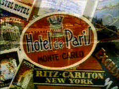
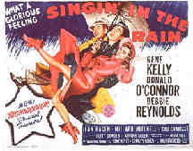
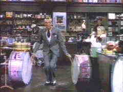
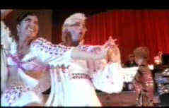

|
Gotta Dance
by Stu Kobak
Creative juices can flow in most any circumstance. When the moment presents itself, it is not always convenient to record your thoughts. An unfortunate accident has introduced me to the wonders of computer notebook composition. Bed rest will never be the same. Today, waiting in the hospital's ambulatory surgery wing to get final clearance for my last surgery, an old
woman limped by with a walker. She bumped into my wheelchair. I noticed she was wearing red shoes. I thought, The Red Shoes, what a fantastic dance movie. Dance, movies, inspiration.
Nothing much. An errant step and an old woman trying to capture the flair of youth with a pair of colorful shoes. I whipped out my notebook like a gunslinger in a B western, ready to take on the world with words. I tapped a tattoo of dance on the keys and began writing, choreographing my words into thoughts. One thought exploded and expanded another until my memories of film moments were sublimely stimulated.
Before I knew it they were calling my name and I had to close my notebook
|

|
|
Traveling montage from The Red Shoes. ©Pinewood Films Ltd.
|
Watching men with bulging muscles clad in tight leotards has never turned me on. The ballet, and I have seen some fine productions, is okay. I can admire the athleticism of bounding men leaping through the fiery strains of Khatchaturian's Spartacus, but still, ballet bulges don't make great entertainment in this quarter.
You might ask about the ballerina, fluttering over the stage on raised toes barely touching the wood, legs exposed for graceful examination. Somehow, I'd rather watch a sexily clad gal go through her dance steps in movie context.
So, how come I love The Red Shoes? It's the dance movie of dance movies: ballet distilled on the screen by the directing/writing team of Powell and Pressburger and even featuring The Red Shoes ballet as the dominant sequence. The Red Shoes is really not about ballet but artistic dedication and sacrifice, and what it means to succeed. Exploring the pain associated with a walk on a tightrope
of narrow focus makes for fascinating cinematic art.
You could have taken all the dance moves ever choreographed for the screen and piled them high into a mountain of celluloid waste before I was exposed to Gene Kelly. And I wasn't exposed to Kelly in a dance movie. The Three Musketeers was my handshake with this unique talent, a film in which Kelly pirouetted his way through a series of delightful rapier displays, leaping
from statues, bounding over bushes, teasing opponents with the tip of his athletic instrument into humiliating submission.
When Kelly sings "Gotta Dance," in Singin' in the Rain, I believe him. After all, as D'artagnan it was "Gotta duel," and duel he did, beautifully. Kelly's athletic style is uniquely suited to any situation and any suit. Whether Musketeer, baseball player in Take Me Out to the Ball Game, sailor in Anchors Away or On the Town, or silent screen idol making the
transition to talkies in Singin' in the Rain, Kelly's a natural
|

|
|
Kelly and O'Connor hoofing it in Singin' in the Rain. ©HBO
|
In later years I came to appreciate the sophistication and sublime grace of great Fred Astaire, but if it wasn't for Kelly, I could never have understood Astaire's magic. While Kelly propelled himself over, around and through the sets of The Pirate, Astaire glided effortlessly on his thin frame up the wall in The Bandwagon, across the dance floor in tails in Top
Hat and through rigors of a sailor's garb in Follow the Fleet. Astaire's magic was created at the wave of leg, a little stutter developed into a gleeful assault of patter and pattern. Astaire was energy distilled in its purest form with no residual deposits. Kelly was energy and vitality in its rawest form. Both were masters on the screen and make watching dance on film as natural and pleasurable as the best of film
experiences.
Maybe it was the timing. When I formed my movie allegiances Kelly was lighting up the screen and Astaire was winding down his brilliant screen dancing. More than that, Kelly was the average guy, an athletic presence that a kid could identify with, while the worldly and much older Astaire was stealing younger starlets out from under the very lustful eyes of young men discovering their sexuality. Perhaps we felt
betrayed by the attraction of the younger woman to Astaire. Most likely it was the physicality that dictated screen appeal for young movie lovers searching for identity. Astaire was a slightly effete presence and even his screen stepping was born on such sophisticated wings that immature audiences found the artistry simply beyond their ken.
Everybody's seen Singin' in the Rain at one time or another. It's a seminal Hollywood musical, capturing the carefree spirit of the young industry when adventure pulsed through the creative celluloid veins. Hollywood’s changeover from silent flickers to talkies is given the best treatment conceivable. It's hard to think of a more successful melding of music, dance and comedy. Everything works with
superb precision. The decisions are all correct.
Gene Kelly co-directed Singin' in the Rain with Stanley Donen. Kelly's dance in the pouring stage rain to the strains of the old Arthur Freed/Nacio Herb Brown title song is so blithely innocent, filled with Kelly's great energy and personality. The choreography is elegantly keyed to the rain , the puddles of water flowing through the streets like a river. Kelly closes his umbrella, then splashes in the
gutter, slides, kicks up the rain with an astounding ebullience that perfectly represents his newly acknowledged love.
This is not the only great dance moment in Singin' in the Rain, though it is the most memorable. Kelly also choreographs Donald O'Connor in the hilarious "Make 'em Laugh" number, featuring athletic moves, explosive energy and every prop in sight. Later, Kelly teams with co-stars Donald O'Connor and Debbie Reynolds for the charming song and dance rendition of "Good Mornin'"*
Singin’ in the Rain is available in several editions. DVD is the latest incarnation of this classic Hollywood musical. The dancing, singing, color and overall intensity of the film are served well by the the latest optical format. The remastered laser versions in CLV or CAV from MGM are the most colorful, capturing the true spirit of the Technicolor era of movie musicals. Several song extras are
included at the conclusion of the film on both editions. Voyager also has two editions of Singin’ in the Rain in their Criterion Collection. Colors are somewhat more muted in these transfers, but all are very sharp from clean source material. Likewise, the mono sound never detracts from the enjoyment of the production. Voyager also has several song bonuses included and the CAV edition features excellent second audio commentary
from film historian Ron Haver.
You can catch up with Astaire by purchasing a wonderful box set that includes four classic black and white Astaire movies, Top Hat, The Gay Divorcee Follow the Fleet, Shall We Dance. "The Astaire and Rogers Collection" presents the premiere dance duo of the screen. Each of the films is presented sharply on a separate platter. The source material is
excellent and contrast levels provide a rich stage for the dances to reveal themselves in flashy glory. Astaire's favorite partner Ginger Rogers is teamed with the master dancer in a series of movies directed by Mark Sandrich. With Carefree, Sandrich directed the dance team in five successful films. The beautiful black and white images are transferred from uniformly good source material. The mono is clean enough to accompany the
dancing jubilantly.
 |
Audiences loved Astaire and Rogers tripping the light fantastic together from the moment they debuted as a team dancing "The Carioca" in supporting roles for the musical Flying Down to Rio.
The four films in the box set combine mistaken identity, misplaced affections, and simple stories infused with many comic moments to provide a comfortable framework for Astaire and Rogers to show off their strutting stuff. There's more than enough dance to fill a beautiful ingénues dance card many times over, and the variety of circumstances finds Astaire as a sailor, a Broadway dancer, a Russian ballet dancer
(That's right, it's back to ballet) and a rich man at play. The music of Irving Berlin and George Gershwin accompanies most of the dances and songs with even Cole Porter's "Night and Day" survives to debut on the screen in The Gay Divorcee. Each of the films hovers round the 100 minute mark, perfectly timed for maximum musical enjoyment.
You can also catch the older Astaire in full color in his only pairing with Judy Garland , the wonderful Easter Parade, directed by Charles Walters with excellent energy or perhaps the remake of Ninotchka, the widescreen Silk Stockings , perhaps the grandest reworking of a film into a musical ever and a smashing showcase for the music of Cole Porter and the dazzling step
work of Fred Astaire.
|

|
|
Fred on the drums. ©MGM-UA
|
Easter Parade is available in a richly Technicolor transfer in a laser disc from MGM. The 104 minute movie co-stars Peter Lawford and Ann Miller. It's very sharp with fine contrasts and there is little or no grain evident. The mono sound plays cleanly and lovingly replicates the Berlin music and lyrics. Silk Stockings at 118 minutes is filled with delightful musical numbers,
including my favorite for the laser disc medium, "Stereophonic Sound." Yes, the 1957 film is presented in stereo surround. Rouben Mamoulian directed with a sure elegance. Cyd Charisse teams well with Astaire.
Dance has not always been presented on screen in traditional ways. In the 1969 They Shoot Horses Don't They? director Sidney Pollack took a most unusual look at dance. It wasn't graceful. It was gritty. It was a pathetic exploration of the dance marathon desperation craze of the Depression.
They Shoot Horses Don't They? was a field day for actors showing off their art. Gig Young, as the marathon MC, brought cynicism to screen perfection, taking his usual light comedy touch and twisting it into a complex dissection of dispassionate manipulation. Jane Fonda, as a desperate marathoner, was given the opportunity to prove herself a major Hollywood force. Red Buttons, huffed,
puffed, and perspired his way to cardiac arrhythmia as Sailor, another lost soul searching for the marathon's pot of gold. Here's a fine film with dance as you've never seen it.
This special edition features running audio commentary from director Sydney Pollack and a short PR documentary about the making of the film. Brief remembrances from actors Jane Fonda, Red Buttons, Michael Sarrazin, Bonnie Bedelia, former ABC Pictures President Martin Baum, Producer Irwin Winkler, and hair stylist Sydney Guilaroff, are included on analog 2 of the laser disc. The
transfer is strong. It needs to be. Most of the movie is set in a dimly lit ballroom in Atlantic City. The disc is sharp enough to clearly define beads of sweat running down Red Buttons' face. Details are clear in all lighting conditions. The widescreen image is framed perfectly in 2.35 aspect ratio and the film is 120 minutes.
Most recently, the ebullience of dance was brought to the screen with a totally fresh perspective in the delightful 1992 Strictly Ballroom. Down under irreverence permeates this spectacular directing debut from Baz Luhrmann. The divine comedy is a sentimental look, in broad comic terms, at the world of ballroom dancing.
|

|
|
Strictly a laugh riot. ©Miramax
|
Scott is a top ranked competitive ballroom dancer on the verge of a championship. It's only his desire to perform fresh new unorthodox ball room steps that has prevented him from winning a crown. When Fran, an ugly duckling, blossoms in the glow of Paul's attention, together they set the ballroom aficionados on their ears in a fabulous upbeat exhibition of dancing.
Paul Mercurio and Tara Morice star as Scott and Fran. Both young actors exhibit star quality that is missing from their follow-up films. Mercurio chose the very unfortunate Exit to Eden and Morice was picked for the boring and stodgy Sorrento Beach. "Ballroom's" supporting players led by Aussie stalwart Bill Hunter are hilarious and the music by David
Hirschfelder gives the dancers the perfect rhythms to show off their talents.
Strictly Ballroom is a beauty of a laser disc. The music rocks with big bass and beautiful brass. The colorful film has been transferred with intense colors and is very sharp throughout the disc. Contrasts are very strong, showing off all the glitz of costumes and ballroom dancing atmosphere. Deep blacks and pristine detail are hallmarks of this laser disc. The upbeat
nature of the film is echoed by the fine laserdisc production.
Some days everything works, communication is born through the air waves and sent to earth on beams of sunshine. That's the way it was in the movies. That's especially the way it was in magic musicals with Astaire and Rogers and Kelly and Hayworth and Garland talking to us with fleet feet gliding across the screen.
Finally, if the films outlined above didn’t satisfy your hunger for dance on film, give That's Dancing a try. A compendium of dance numbers from MGM films along the lines of That's Entertainment, the laser is available from MGM through Image Entertainment.
*Reader Mel Matsil noted I incorrectly sited Kelly, O'Connor and Reynolds dancing to the "Make 'Em Laugh" number. Thanks to Mel, the article reads correctly now.
|
|
|

The Feature Archive has articles ranging from Akira Kurosawa to Blonde Bimbos and John Ford.
Puttin on the Ritz

Fred Astaire and Cyd Charisse bring Silk Stockings to life, a remake of Ninotchka, one of many films successfully turned into musicals by the Hollywood dream factory. Read all about remakes into musicals by clicking on the divine dancers.
Sturges Emerges
Preston Sturges was Hollywood's resident comic genius for more than a decade. His movies are timeless. Click on his image to read all about it.

Take a look at the merry images of America's gift to the movies: Hollywood Musical Posters are featured from The Movie Poster Archive.

 Gary Morris's insightful publication Bright Lights Film Journal turns the celluloid in films from a unique perspective. Click on the image above for more pure movie views. Gary Morris's insightful publication Bright Lights Film Journal turns the celluloid in films from a unique perspective. Click on the image above for more pure movie views.
 Sight and Sound Magazine is the venerable voice of The British Film Institute. The site includes articles and film reviews. A great resource in print and on the Internet. Sight and Sound Magazine is the venerable voice of The British Film Institute. The site includes articles and film reviews. A great resource in print and on the Internet.

The Digital Ring has DVD reviews and theatrical release reviews as well. Check out their DVD site of the month feature.
gopherDVD.com is a Down Under retailer specializing in Region 4 DVDs. Dig in and take a look. They ship everywhere.
 A new online DVD retailer specializing in the Canadian market. Look for some interesting loss leaders and their buy ten get one free program. A new online DVD retailer specializing in the Canadian market. Look for some interesting loss leaders and their buy ten get one free program.
 DVD Gold DVD Gold
specializes in Region 2 films, and spins gold about the latest DVD releases in England and elsewhere. Check out the new site.
 DVD Informix is a British site providing a variety of DVD information, including lots of DVD software. Check it out from articles to links. DVD Informix is a British site providing a variety of DVD information, including lots of DVD software. Check it out from articles to links.
 Lovers of Hong Kong movies will relish MC4's site that includes reviews and other information about the Hong Kong movie scene. Lovers of Hong Kong movies will relish MC4's site that includes reviews and other information about the Hong Kong movie scene.
ReelClassics.com
A mountain of information on actors and actresses, directors and Hollywood, with more links than you can count. Want information on Ida Lupino? ReelClassics.com is a great recourse. Elizabeth for does a yeoman-like maintenance job
Imaging Science Foundation
The Imaging Science Foundation promotes proper standards in home theater viewing. ISF trained technicians offer monitor calibration services to consumers. The difference in a properly calibrated monitor can be astounding. Click on the image to find an ISF member near you.

Doug Pratt's been doing almost longer than anyone in the business, reviewing laser discs, that is, and now DVDs too. The venerable Laserdisc Newsletter has been publishing since 1984. Pratt probably has a large enough stock of laser discs in his house to build a DVD-proof bomb shelter. Check out his on-line reviews at DVDlaser.com.

Venerable electronics industry magazine with excellent online selections from their hard book.

Now a major independent DVD distributor, Image has parlayed its laser disc business to success. Great DVD release calendar info.

The official site for information about the great comic director. A treat for connoisseurs of classic Hollywood madcap.

DVD links, information about Web specials, news, Site reviews.

DVD Reviews and more. The credo behind DVD Angle is "we cater to no one, and we call it as we see it."
. The online site for Film Comment Magazine includes all the information you need to know about cinematic events
sponsored by the Film Society of Lincoln Center. The online site for Film Comment Magazine includes all the information you need to know about cinematic events
sponsored by the Film Society of Lincoln Center.
|